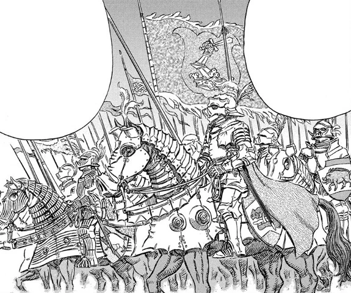

Estado: Ativo
Exército: Rinocerontes Roxos
Tudor é um império vizinho de Midland, que guerreou contra o reino durante cem anos. O país possui poderosas tropas de cavalaria, e seus cavaleiros trajam armaduras pesadas de design único. Tudor é um dos países a seguir os ensinamentos do Vaticano, e participou da intervenção militar contra Kushan, durante a invasão da nação do Leste contra Midland.
O Império de Tudor teve 3 exércitos durante sua história, sendo eles:
- Cavaleiros Rinocerontes Roxos;
- Cavaleiros Ovelhas Negras da Lança de Ferro;
- Cavaleiros Baleia Azul.